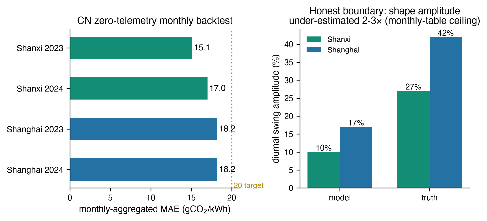
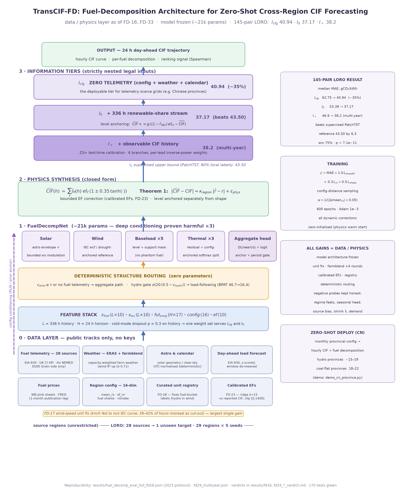
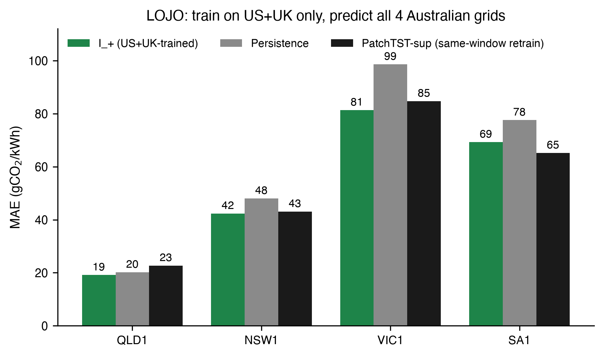
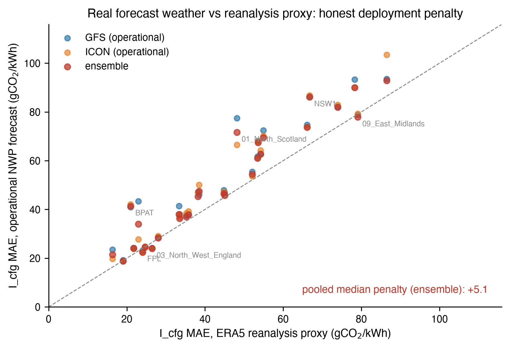
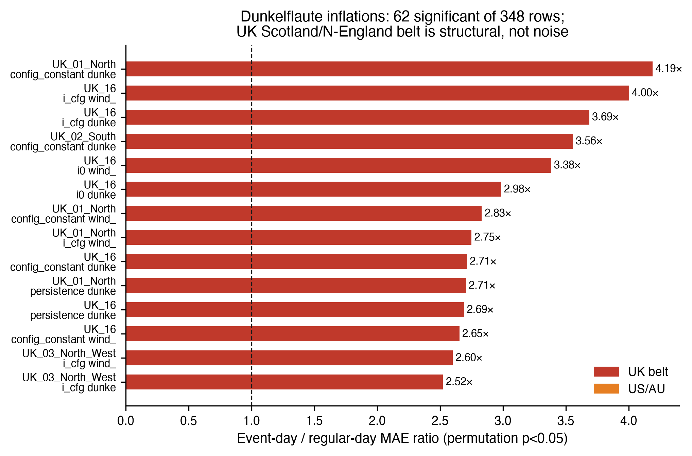
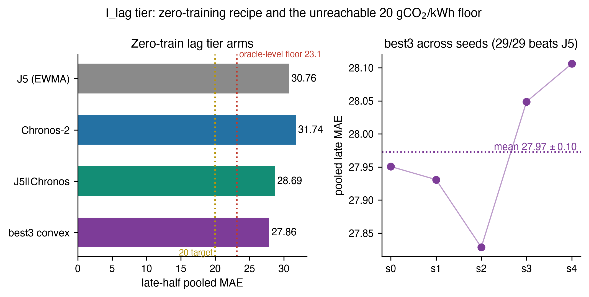
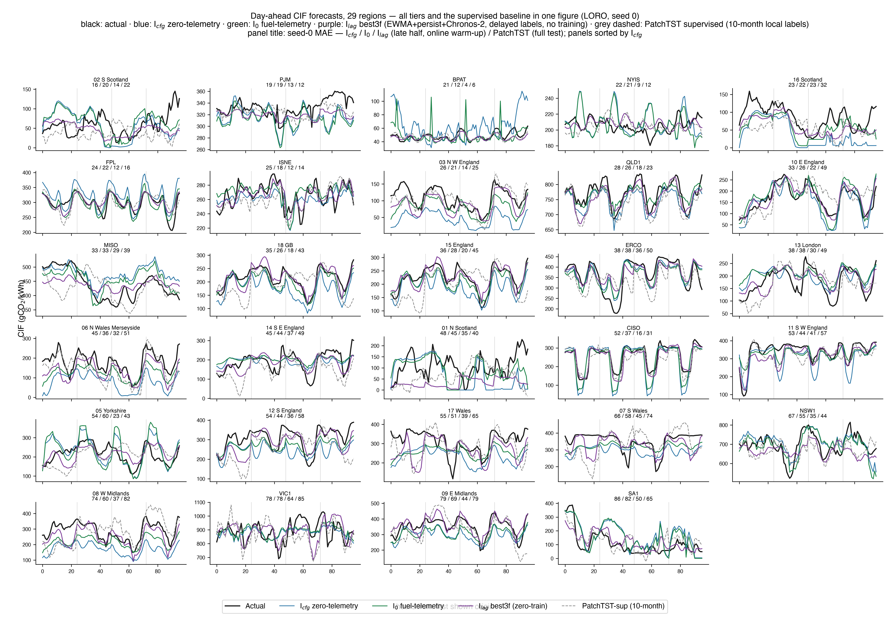

用法：每节先展示论文原图，灰底「讲词」照读，黄底「指图」是翻到该页时用手指/激光笔引导观众看图位置的话术；蓝边「公式卡」列出该节对应的论文核心公式，讲到时指一下即可，不必逐符号念给观众。图号、公式出处均与论文一致，可直接对应幻灯片编号。打印时自动转为黑白友好样式。
开 场
一句话结论先行
各位好。我今天汇报的题目是《零遥测电网碳强度预测：基于物理的燃料分解、信息层级与跨洲迁移》。
整个汇报按"背景—假设—实验—发现"的链条来讲：每一步，先说清楚我们当时面对什么情况、提出了什么假设、跑了什么实验、然后在图上看到了什么。我先说结论：在没有一条燃料遥测数据的电网上，我们的模型对明天每小时的碳强度做出了预测，而且比用 10 个月真实数据训练出来的监督模型更准。接下来讲这句话是怎么一步步验证出来的。
指 图开场不放图，用纯文字页。这页只需停留 10 秒，把"零遥测、更准"两个词说重。
第一部分 · 背景铺设
价值最高的地方，恰恰最缺数据

论文图 7：中国零遥测月度回测（本节只讲背景，数据下一节再解读）
先铺背景。碳感知调度的逻辑很简单：把计算负载、把充电需求挪到电网更干净的时段去。挪得值不值，完全取决于你对"明天电网干净不干净"的预测准不准。
但这里有一个结构性错位：碳感知调度边际价值最高的地区，恰恰是逐时燃料数据最难拿的地区。以中国为例，我们核过底：七个省级现货市场已经正式运行，山西 2023 年 12 月率先转正，15 分钟级的分电源数据是存在的——但你要有市场成员资格才能拿；官方碳强度呢？只有年度均值，还滞后大约两年。调度需要的是"明天 24 小时的曲线"，能拿到的可能是"两年前的年均数"。
面对这个情况，我们提出了贯穿全文的总假设：只靠公开信息——电网配置加公开气象数据——也能把逐时碳强度预测做到可用。论文把这个"信息到哪一层、方法到哪一层"的思路写成式 1 的嵌套链。下面的每一组实验，都是在检验这个总假设的一个侧面。
式 1 · 信息层级（论文 §1/§3）
ℐcfg ⊂ ℐ0 ⊂ ℐ+ ⊂ ℐlag ⊂ ℐS(1)
ℐcfg 零遥测：公开配置+气象+日历
ℐ0 +实时份额流
ℐ+ +CIF 历史（免训练校准）
ℐlag +滞后标签（零训练混合）
ℐS +10 个月标签（全监督）
五层严格嵌套，逐层定价"多一份信息值多少精度"。今天的主战场是最左边、也是门槛最低的 ℐcfg——"中国省级电网今天就能跑"的那一层。
指 图此页先不给观众看图细节，只指屏幕上的"山西 / 上海"两个地名："这两个电网，就是我们的试验田——山西有公开学术数据集当考卷，上海有公开月度统计。具体数字第三章再揭晓。"指完图，顺势指一下上方的式 1 卡片："这条链是全文的骨架，后面每章都在链上走一格。"先埋钩子，再往下走。
第二部分 · 假设一
水平学不来，形态学得会

论文图 1：FuelDecompNet 架构——十个燃料专属份额头 + 固定查表重构层
我们的第一个假设来自一个观察：直接回归碳强度的模型，必须同时学两样东西——一个地区的"绝对水平"，这是排放因子和燃料结构决定的，区域特有，学不来；以及"一天之内怎么起伏"，这是天气驱动出力的物理规律，跨区域共享，学得会。如果这个分离真的成立，那么新电网的零样本预测就应该是可行的。
基于这个假设，我们做了实验：模型不再直接回归碳强度，而是预测十条燃料份额轨迹——光伏占多少、风电占多少、五类基荷各占多少——再用查表的排放因子把份额线性拼回碳强度（式 2）。如图 1，这就是 FuelDecompNet：十个带物理归纳偏置的份额头，接一个固定查表重构层。水平全部交给查表和公开配置去承担，模型只负责学形态。整个模型参数量大约 2.1 万。
式 2 · 物理层重构（论文 §3，对应图 1 右侧查表层）
CIF(t) = ∑f = 1…10 sharef(t) · EFf(2)
十条燃料份额 × 查表排放因子，线性拼回碳强度。EFf 跨区域 208–1160 gCO₂/kWh，系数查表、从不估计——"水平学不来"的部分被这一行公式整个移出神经网络。训练侧配套一个 config 距离加权采样 wi = 1/(|Δrsi|+0.05)，是消融里最强的单一杠杆（去掉后误差 +18.5%）。
十头物理分解：每头的归纳偏置（论文 §4.2 节选）
solar : cfg份额 × [astro(h)/日均astro] × (1+0.4·tanh(MLP(未来天气))) ← 天文通道主导
wind : 水平 × [容量因子(h)/参考容量因子] × 调制 ← 场加权风况 + 干旱锚定
baseload×5 : 水平统计 + 支撑掩码×先验 + 掩码×日历修正 ← 零份额燃料不幻觉
thermal×3 : T = 1−Σ非可调度; split = softmax(log(cfg+0.02)+掩码×修正) ← 配置先验零初始化
物理层 : CIF = Σ ŝf · eff · (1±0.35·tanh(EF校正)) ← 即式 2，系数查表
结构路由 : 风电配置份额 ≥ 0.25 → 聚合路径，否则燃料路径 ← 零参数，部署前可判
指 图讲图 1 时按数据流走一遍：左边输入（配置 + 气象）→ 中间十个并排的份额头（"每个头只管一种燃料，各自的物理偏置见下方伪代码卡"）→ 右边查表层。手指停在查表层上补一句："这就是'学不来的不学'——式 2 里的 EF 全是查表值，水平问题被我们直接从模型里拿掉了。"
第三部分 · 假设二
形态既然是物理规律，跨洲也该成立

论文图 3：跨洲迁移——US+UK 训练的模型（绿色）对四个澳大利亚电网的本地监督 PatchTST；SA1 为理论预测的合成标签例外
第一组实验还在同洲内做。顺着"形态是物理规律"这个假设往下推：物理规律不分国界，那么只用北半球数据训练的模型，扔到另一个大洲也该成立。
实验是这么做的：只用美国 8 个平衡区加英国 17 个区域训练，模型不做任何调整，直接投到澳大利亚的 4 个电网，跟用本地数据训练的监督 PatchTST 对打。为什么胜负格局可以在部署之前预判？因为预测误差穿过物理层时，满足一个精确的恒等式——式 3。
式 3 · 定理 1：穿过物理层的精确误差传播（论文 §5.1）
ĈIFt − CIFt = ∑f ( ŝf,t − sf,t ) · EFf + δt(3)
CIF 误差精确分解为"份额误差 × 已知物理常数 + 物理残差 δt"，与架构无关。直接推论是免费的难度排序：同等份额误差下，LT=|efr−efnr|=1160 的区域承受 LT=208 区域约 5.6 倍的误差——这就是"部署前可预判"的数学依据。（SA1 的例外另有来源：其燃料标签是分类器合成的，含物理路径看不见的伪影，监督模型能拟合、我们的物理路径看不见。）
结果发现，如图 3，四个电网赢下三个。唯一输的 SA1 恰恰是一个被理论提前预测的例外：它的燃料标签是分类器合成的，含物理路径看不见的伪影，监督模型能拟合伪影，我们的物理路径看不见伪影。换句话说，连这个失败都落在理论预测的位置上。假设二成立：迁移的胜负格局可以在部署之前预判，赢在哪、输在哪，先验可算。
指 图图 3 从左往右是四个澳洲电网。逐个指柱子："NSW1 赢、VIC1 赢、QLD1 赢"——手指移到 SA1 停住："到这里输了一个。但注意，这个失败我们在投稿之前就算出来了。"顺势指一下上方的式 3 卡片："误差被 EF 增益放大，难度排序是免费的——公式在，胜负就在部署前算出来了。"
第四部分 · 假设三
学术成绩单在真实部署里还成立吗？

论文图 5：推理期业务 NWP 对再分析天气——逐区域散点（对角线上方为精度损失），合并中位损失 +6.4 gCO₂/kWh
到这里成绩很好看，但我们提出一个自我怀疑的假设：前面所有实验用的都是"完美天气"——再分析资料，本质上是一份事后修正过的天气数据。真实部署拿到的只有业务数值天气预报。如果换成真实天气，优势还在吗？
实验 A：把输入从再分析换成真实业务天气预报，全量重跑。结果发现，如图 5，逐区域散点几乎全部落在对角线上方，合并中位精度损失 +6.4 克每度电，而且高风电区域损失最大——业务天气的风况误差，正好打在高风电区域的容量因子通道上。
指 图图 5 是散点阵：每个小格一个区域，横轴再分析、纵轴业务天气，点在对角线上方 = 变差。先用手沿对角线划一下（"这条线是'没损失'"），再指几个明显偏离对角线的点（"这些高风电区域掉得最多"），最后收一句："但没有一个区域掉到对角线以下——方向性优势在真实天气下保住了。"

论文图 4：事件日误差放大——348 项检验中 62 项显著；苏格兰-北英格兰地带达 4.19 倍
实验 B：我们构造了一套完全可复现的事件日标签——所谓 Dunkelflaute，风和光同时熄火的日子——去检验极端日子的放大效应。结果发现，如图 4，348 项方法-区域检验里 62 项显著，误差放大 2 到 4 倍，而且不是孤立噪声：最红的苏格兰到北英格兰风带达到 4.19 倍，呈系统性空间结构。
这两个数字我们不回避，反而写成设计输入：业务运行要按 6.4 打折，事件日要按 2 到 4 倍留裕度。
指 图图 4 是地图式热力：颜色越红放大越狠。手指从英格兰往北划到苏格兰："这一条带是英国的风电走廊——风一停，整个地带的误差同时起飞，这是空间上成片的系统性风险，不是单点运气差。"
第五部分 · 假设四
不训练，能不能追上监督？

论文图 6：左——滞后混合各方案 MAE（27.95）；右——最优混合 5 种子稳定性（27.97 ± 0.10）；水平替换下界 23.1
第四个假设更进一步：既然水平可以靠近期实际观测校正，那一个完全不训练的模块，能不能追上监督模型？
实验：免训练滞后混合——用近期滞后观测做指数滑动平均校正水平，配上 Chronos-2 的形态先验和持久性分量，权重只用早半段数据拟合，后半段盲测。配方就是下方的式 4。结果发现，如图 6 左，混合方案达到 27.95，是监督精度的 64%；图 6 右是五个随机种子，27.97 ± 0.10，非常稳。
式 4 · Ilag 层三分量凸混合（论文 §4.5/§7.8，对应图 6 左）
ŷ = wg·EWMA(J5) + wp·persistence + wC·Chronos-2 ， wg+wp+wC=1(4)
三个分量各管一段：EWMA 水平修正（st = α·xt + (1−α)·st−1，近端观测锚住水平）；persistence 就是 lag-24h——"昨天的同一小时"，日内形态锚；Chronos-2 只出形状先验。权重在 0.05 网格上、只用 early 段拟合。配套一条不等式：任何只校正水平的零遥测方法 MAE ≥ 23.1（oracle 水平地板，保形态、水平换真值时的误差）——所以 20 gCO₂/kWh 的目标数学不可达，图 6 里那根下界参考线就是它。
这组实验还带出一个副产品。我们顺手做了一个"水平替换"实验：保留模型的形态、把水平直接换成真值，看误差还剩多少。结果如图 6，下界是 23.1。这意味着：任何只校正水平的零遥测方法都不可能低于 23.1，20 的目标在物理上被封死了——不是我们的模型不行，是这类方法的上限就在这里。我们把它写进论文，是为了让后续工作不要再在这个数下面空转。
指 图图 6 左边是几根柱子，从左到右方案变强：指最矮那根（三分量混合 27.95）。再指图中代表 23.1 的下界参考线："这根线是天花板倒过来——地板，对应式 4 卡片里那条不等式，所有只修水平的方法都压不破它。"右边五个点几乎重叠："五种子同一结果，说明这不是抽签抽出来的好成绩。"
第六部分 · 回到中国
分层兑现
论文图 7：左——山西/上海月聚合 MAE 全部低于 20 gCO₂/kWh 目标；右——日内形态幅度被低估 2–3 倍（信息上限）
现在回到开头的中国背景。前面讲的所有层级不是论文修辞，它对应的正是分级披露的现实：月度统计全公开，高频数据要市场成员资格。把月度统计翻译成模型契约时，进口电的处理是一个代表性组件——式 5。
式 5 · 送端加权进口排放因子（论文 §6 翻译层组件 ii）
EFimport(m) = ∑s ∈ 送端省 ws(m) · CIFs(m)(5)
进口电的碳强度不是常数，而是按送端省份的月度发电结构流加权：四川枯水期热电抬升、丰水期压低。山西受电份额 45.1%，进口 EF 枯 305 / 丰 194 gCO₂/kWh——这种细节只有把"月度公开统计 → 模型输入"逐项翻译才拿得到。
实验：只拿公开月度统计驱动第一层，在山西和上海做独立真值回测。结果发现，如图 7 左，月聚合误差 15 到 18 克每度电，全部低于 20 的目标线——"任何省今天就能跑"这句话是被数据支持的。同时我们如实报告这层的上限，如图 7 右：日内形态的幅度被低估 2 到 3 倍，根源是月度统计里看不到燃料份额的季节波动——这是信息量的上限，不是模型的缺陷。披露到哪一层，方法就升级到哪一层——开场式 1 那条嵌套链，在这里落地。
指 图先指左图：几根柱子都在 20 的目标线之下（"第一层就达标了"）。再指右图，语气放平："同一层级的日内曲线长这样——幅度明显偏矮。我们主动把这页放出来，是想说清楚：这不是模型没调好，是月度统计里根本没有那些信息。缺什么信息，就补什么层级。"
第七部分 · 一个有价值的负结果
图 8 的曲线：先验再准，不如留一条在线校正的通道

附录图 8：29 区域日前 CIF 预测曲线（黑真值 / 蓝零遥测 / 绿遥测 / 紫滞后层 / 灰虚线监督），面板按零遥测 MAE 升序
最后讲一个没来得及进正文、但对我们部署观感影响最大的发现。附录图 8 是 29 个区域的逐时日前曲线：黑色真值、蓝色零遥测、绿色遥测、紫色滞后层、灰色虚线监督。我们逐个面板检查时发现：少数区域的曲线前半段贴得很好，后半段却系统性飘了——风向换季了，模型里的天气-出力参考还停在旧值上。
面对这个现象，我们提出假设：静态校准应该能治。两个具体改法：把参考期从年均改成月均；或者让模型回看最近一周的真实风况。实验在 29 个区域全量跑。结果发现，两种改法都能把固定的偏置砍掉一半——说明病因确实找对了；但整体误差反而恶化了大约 10%：季内的误差先偏高、后偏低、再回来，静态规则追不上一个会掉头的目标。
这个负结果反过来加固了体系设计：这类漂移必须靠在线自适应解决，而滞后层的指数滑动平均正是为此而生的。所以实操教训一句话：先验调得再准，不如留一条在线校正的通道。
指 图图 8 是 29 宫格大图，投影上字会很小，不必逐格讲。挑 1–2 个面板放大讲（可在幻灯片里单独裁出）：先指黑线与蓝线重合的段（"贴得很好"），再顺时间轴往后移，指蓝线整体抬离黑线的那一段（"风向换季，参考还停在旧值——飘的就是这里"）。收尾指紫色滞后层曲线："而紫线全程贴着黑线——这就是在线校正通道的价值。"
结 尾
三句话收束
总结成三句话。第一，零遥测碳强度预测可以做到与十个月监督训练持平或更优——假设一、二的实验链证明了这一点。第二，它的胜负格局由物理量决定，部署之前就能预判——图 3 和式 3 的定理 1 给出了依据。第三，它与分级披露制度天然同构，信息到哪一层，精度就到哪一层——式 1 的层级、图 6、图 7 是证据。
代码、逐区域结果、事件标签和完整的审计记录随论文一并发布，每个数字都能追溯到归档文件。谢谢大家，欢迎提问。
指 图结尾页建议放一张"全家福"缩略拼版：图 2、图 3、图 7 三张小图并排，念到对应句子时分别指一下，视觉上把三条结论钉住。
附 录
可能的提问与要点
- "山西的数据你们用了没有？"
- 没有。ESPS 数据集只当考卷（评估真值），从不当课本（模型输入）。
- "为什么监督基线只用 10 个月数据，不用更久？"
- 10 个月 = 每区域约一年标签流按 80/20 时间切分的训练段（0.8 × 8760h ≈ 7008h），是三个辖区共同窗口内的上限；测试段必须取最新 20% 且与全部层级同口径。补充弹药：消融显示"多年训练数据"无增益，且监督模型的失败模式（配置边界外推、拟合合成标签）不是数据量问题。
- "误差下界 23.1 怎么理解？"
- 水平替换实验的产物：形态全对、水平换成真值时的误差。任何只修水平的零遥测方法不可能低于它；想突破必须引入新的形态信息。
- "式 3 里的 δt 是什么？"
- 真实份额处的重构值与实测 CIF 之差——进口、损耗、子燃料异质性造成，是物理层查表消化不掉的部分。I+ 层免训练校准的第二步就是在经验估计它（论文 §4.4/§5.1）。
- "SA1 为什么输了？"
- 它的燃料标签是分类器合成的，含物理路径看不见的伪影；监督模型能拟合伪影。这是理论预测到的例外，不是意外（图 3）。
- "业务天气那 6.4 能优化吗？"
- 损失集中在高风电区域的容量因子通道（图 5），NWP 风况校正与多源集合是后续的针对性方向（论文结论节已列）。